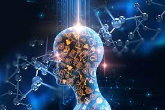

Elle est directement liée à la montée en puissance des données , à l’évolution des technologies et à l’utilisation des données sur Internet. En effet, en une cinquantaine d’années on a eu une très grande évolution des données dans trois dimensions, appelées les 3V : vitesse, volume, variété. L’utilisation de l’intelligence artificielle est basée sur des algorithmes de ces données, afin de pouvoir proposer des solutions aux personnes souhaitant combiner ces données.
Le volume représente l’ensemble des données que les entreprises ont à traiter. Ce dernier est tous les jours de plus en plus important car la quantité de données générées et traitées par les entreprises et les personnes ne cessent d’augmenter. Il semble alors important de pouvoir gérer l’importance de ces données. Le Big Data est le seul à pouvoir traiter cette importance des données.
Si de plus en plus de données sont générées, elles le sont à une vitesse conséquente. La vitesse représente effectivement la rapidité à laquelle les données affluent. Il faut que l’accès aux données soit immédiat, et donc permettre un partage dès l’obtention des données. En effet, avec l’évolution de l’affluence des données, elles deviennent rapidement obsolètes.
La génération des données étant réalisée par les entreprises mais également par les personnes, l’ensemble de ces données est très varié. Il va regrouper les données personnelles des personnes, qu’elles vont partager sur les réseaux sociaux, en remplissant des questionnaires en ligne, ou encore les informations contenues dans les téléphones portables. On peut retrouver les informations concernant la géolocalisation, les enregistrements audios, les photos ou encore les vidéos. Il faut alors constater que la combinaison des trois V représente bien la complexité et la diversité des données qu'on peut avoir aujourd’hui mais également la nécessité d’adapter leur traitement. Elles sont de plus en plus nombreuses, de plus en plus différentes. Elles doivent rester accessibles par tous, à tout moment, tout en respectant une certaine protection des données. Dans l’objectif de comprendre l’apparition et le développement de l’intelligence artificielle, il convient de comprendre la notion de Big Data.
Dans un premier temps, l'apparition du Big Data est due au développement numérique de nos sociétés, entraînant l'apparition explosive des données numériques. A titre d’exemple, actuellement chaque jour la société crée 2,5 trillions d’octets de données. Ces chiffres permettent de montrer l'extension et l’importance de cette notion. Malgré tout, elle reste encore difficile à définir concrètement aujourd’hui. On sait que cela rassemble l’ensemble des données des entreprises et des personnes, donc les données privées mais également les données publiques. Ce sont les géants du Web qui sont les premiers créateurs de ces données, et des technologies entraînant l’utilisation de ces données. On peut retrouver Google ou Facebook. Les trois V sont utilisés pour le traitement et l’accès à ces données. En effet, un des points importants dans l’apparition et l’usage de ces données, c’est le stockage qui doit être fait de ces dernières. Il faut alors revenir aux origines de l’apparition des données, de la reconnaissance des données personnelles et de l’évolution des technologies.
Les premières études liées à la vie privée ne datent pas d’aujourd’hui. Il y a dans un premier temps eu de nombreuses questions sur la séparation de la vie privée, par rapport à l’Etat. La volonté de distinguer la famille des affaires de l’Etat, permet de mettre en avant cette nécessité de respecter la vie privée dans le régime démocratique. Effectivement, les enjeux de la vie privée ne portent plus uniquement sur l’Etat lui-même, et la construction du droit des données personnelles permet la protection de ces enjeux. En effet, le droit des données personnelles s’est développé grâce à la mise en place de lois, dans un premier temps en Allemagne, en 1977 pour la protection contre l’emploi abusif des données personnelles. En janvier 1978, la loi informatique et liberté entre en vigueur en France, afin de réglementer également l’usage des données personnelles. On peut alors constater qu’il y a eu une évolution constante, et rapide, de l’utilisation des données personnelles mais également une volonté de protéger ces données. L’évolution rapide des technologies donne lieu à la mise en place de nombreuses protections, essentielles, qui n’ont jamais été aussi fortes qu’aujourd’hui. Cependant, le droit des données personnelles n’est pas totalement éclairci actuellement car on se pose encore la question de savoir s’il s’agit d’un droit procédural ou d’un droit fondamental. L’état actuel du droit européen et dans les pays, permet plutôt de distinguer un droit fondamental. Mais des questions se posent pour la reconnaissance d’un droit procédural, qui donnerait lieu à la nécessité de réécrire la carte européenne. Les technologies, en constante évolution, sont basées originellement sur le machine Learning et le big data. Ces notions déjà présentes dans les années 50, sont des notions interdépendantes. En effet, John McCarthy a créé le terme d’intelligence artificielle en 1955, puis a donné une conférence sur cette notion avec ses collaborateurs par la suite. Cela a donné lieu à la création du machine learning et du big data, dans les années 80. Le machine Learning permet de réaliser des prédictions, en se basant sur des statistiques, d’où l’importance du big data, qui représente les mégadonnées collectées auprès des entreprises de toutes les industries. Alors, on comprend qu’il y a une incitation à l’utilisation des données, pour réaliser des analyses par exemple. Le machine learning est de plus en plus performant, quand il est exposé à de plus en plus de données. Le machine learning va donc être une branche de l’intelligence artificielle. On constate que dans les deux cas il y a une nécessité de mise en place de systèmes informatiques et d’algorithmes, et de la présence d’une collecte de données. Il convient donc d’essayer de comprendre l’intelligence artificielle, sa mise en place et ses conséquences.
Le droit à la vie privée est un droit fondamental qui se doit d’être protégé par toutes sociétés dites démocratiques au risque de se faire passer pour un Etat totalitaire. Georges Orwell dépeignait déjà le risque d’un État ultra intrusif au moyen de technologies modernes dans son œuvre « 1984 » publiée en 1949. Il existait déjà à cette époque une réelle crainte de ne plus avoir aucun espace rien qu’à soi. Aujourd’hui, même si les Etats ont évolué, cette peur reste tout de même présente. Alors que le monde se mondialise, de nouveaux enjeux quant à la protection du droit à la vie privée apparaissent. La protection de ce droit est en grande partie entre les mains d’acteurs privés contrairement à ce qu’imaginait Georges Orwell. De plus, avec la mondialisation, ces acteurs privés ne se situent pas uniquement sur notre territoire national mais ont un caractère transnational. Effectivement, il y a une utilisation et des transferts de données entre tous les pays, que ce soit entre la France et les pays de l’Union européenne ou encore avec les Etats-Unis ou la Chine. Enfin, les nouvelles pratiques institutionnelles émergentes comme le capitalisme de surveillance ne doivent pas ignorer le caractère fondamental du droit à la vie privée. Ces questions de la protection des données personnelles ont pu être posées en particulier en Chine, car la surveillance constante des citoyens, et l’usage de la reconnaissance faciale dans un grand nombre de services remet en question la protection de la vie privée.
La création du machine learning dans les années 80 a permis de mettre en place une sous-branche de l’intelligence artificielle, avec pour but d’exécuter un grand nombre de tâches automatisées mais de contourner les difficultés rencontrées au sein de l’intelligence artificielle. En effet, si l’intelligence artificielle a été rapidement développée, dans l’objectif de faciliter le traitement et l’utilisation des données, on peut en ressortir malgré tout de nombreux problèmes, pas encore résolus aujourd’hui. Cet enregistrement conséquent des données montre en réalité que les individus sont constamment surveillés. Leurs données sont récoltées par les sites internet, les réseaux sociaux, qui sont capables par la suite de leur proposer leur préférence. Par exemple, un individu va se connecter sur un site de bijoux, même une seule connexion, et la publicité de ce même magasin de bijoux sera présente par la suite sur son mur Facebook. Cette utilisation des données dans un but marketing, où les données sont vendues, met en avant un capitalisme de surveillance. On a ici une personnalisation de l’offre commerciale selon le profil de chaque individu, l’utilisation qu’il a d’internet, avec un objectif de vente par la suite. Il revient alors à se demander si l’intelligence artificielle n’aurait pas un impact sur l’économie de chaque individu, utilisant les réseaux et Internet en général. Cela reviendrait à penser que l’intelligence artificielle aurait un certain contrôle sur les individus.
Comme nous avons pu le préciser précédemment, la technologie de l’intelligence artificielle utilise des (tonnes de) données personnelles pour fonctionner, données définies par le Règlement Général sur la Protection des Données comme « toute information relative à une personne physique identifiée ou identifiable (personne concernée) [...] directement ou indirectement » (article 4 §1 du RGPD). De plus, les technologies déployées qui embarquent une intelligence artificielle peuvent parfois être invasives (comme la technologie de reconnaissance faciale). Malheureusement, de nombreux obstacles factuels se dressent devant la loi pour légiférer ces technologies à tendance intrusive. Les définitions difficiles de certains concepts (programme vs donnée, donnée brute vs donnée traitée, donnée personnelle vs donnée anonyme), les collectes massives et l’évolution rapide des technologies utilisées rendent les législations sur la protection de la vie privée assez compliquées et souvent à la traîne.
La CNIL, ses homologues et le contrôleur européen de la protection des données ont adopté un avis sur la proposition de règlement de la Commission européenne sur l'intelligence artificielle. Cela montre donc bien que ce sujet est central au sein de l’UE et vient poser plusieurs questions juridiques majeures. Les pères fondateurs des protecteurs des droits des données sont totalement réfractaires à l’idée que de telles données soient collectées sans un consentement clair des personnes visées par cette dernière. Pour eux la technologie est trop puissante face aux capacités juridique. Si on vient à accepter que la RF soit mise en place sur une grande échelle de population centralisée alors on rompt avec la tradition. D’où le désir de l’Union Européenne de contrer ce manque juridique et de venir mettre en place un règlement qui visera à encadrer le cadre légal de la mise en place et de l’utilisation de telles technologies. Juridiquement, le projet de règlement sur l'intelligence artificielle montre la nécessité de tracer des limites aux futurs usages de ces technologies. Il est mis en avant dans ce projet le désir de construire un règlement qui veut un usage éthique et conscient des risques encourus par ces technologies au sein de l’espace public notamment. Les différentes autorités ouvertes à la consultation de ce projet ont cependant souligné le fait qu’il fallait élargir les cas interdisant l’usage de ces technologies et de bien définir ces cas interdits pour assurer un usage non abusif de ces technologies comme la reconnaissance faciale qui peuvent constituer de véritables risques.
Février 2018